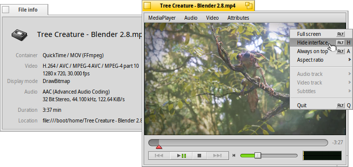
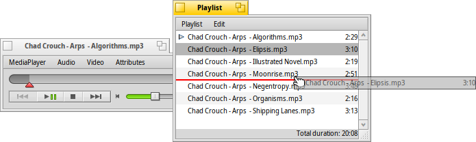
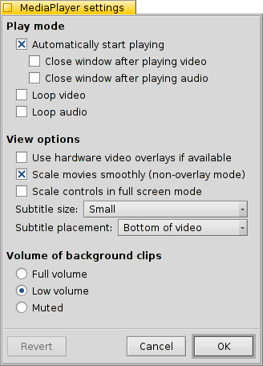

日本語
日本語 Català
Català Deutsch
Deutsch English
English Español
Español Français
Français Italiano
Italiano Magyar
Magyar Polski
Polski Português
Português Português (Brazil)
Português (Brazil) Română
Română Slovenčina
Slovenčina Suomi
Suomi Svenska
Svenska 中文 ［中文］
中文 ［中文］ Русский
Русский Українська
Українська メディアプレーヤー (MediaPlayer)
メディアプレーヤー (MediaPlayer)
| Deskbar: | ||
| 場所: | boot/system/apps/MediaPlayer | |
| 設定ファイル: | ~/config/settings/MediaPlayer |
メディアプレーヤー (MediaPlayer) はすべてのオーディオと動画ファイルの標準プレーヤーです。ffmpeg バックエンドのおかげで多くのフォーマットがサポートされています。シンプルなインターフェースにはユーザーが求めるすべてのコントロールが付いています。

プログレスバーのスライダーですばやく新しい位置に移動できます。マウスをスライダーの上に置くとクリップの現在時間と残り時間を表示します。右にあるタイムディスプレーにクリックすると長さ、現在時間と残り時間を切り替えます。
その下には、前のトラックにスキップ、再生 / 一時停止、停止と次のトラックにスキップする通常のコントロールがあります。次にボリュームコントロール (スピーカーシンボルをクリックするとミュートに切り替えます) と VU メーターがあります。
オーディオとビデオの再生
オーディオ再生用の特別な機能は付いていないので、ただちにビデオ再生と一般設定に進みます。
(ALT I) はすべてのメディアに利用できます。現在ロードされているファイルの情報 (たとえば再生時間、またはオーディオ / ビデオトラックやエンコーダーの詳細) を表示します。
メニューから煩雑に利用するコマンドのほとんどは、ビデオエリアを右クリックして開くコンテキストメニューからも利用できます。全画面表示のときに便利です。
ではウィンドウのズームや、アスペクト比を標準値に強制的に変更できます。正しくエンコードされたファイルには、アスペクト比を の標準にしておくことは最適なはずです。
メディアプレーヤーは SRT フォーマットの字幕をサポートしています。 に表示するには、ファイル名をビデオファイルと同じ名前にし、言語名を追加し、ビデオの拡張子の代わりに ".srt" で保存してください。たとえば：
マイムービー.avi マイムービー.Deutsch.srt マイムービー.English.srt マイムービー.Français.srt
1 つのビデオファイル内に複数の言語のために頻繁に使われる複数のオーディオトラックは、サブメニューから利用できます。サブメニューは複数のビデオストリームがあるときに同じことを提供します。
モード (ALT ENTER か F、またはダブルクリック) へ切り替えたり、 (ALT H かダブルクリック) でメディアプレーヤーのウィンドウ枠とコントロールを隠したり、ウィンドウを (ALT A) に表示できます。
プレイリスト
(ALT P) で、現在プレイバックを待っているファイルを含むウィンドウを開けます。ダブルクリックすると再生が始まります。
ドラッグ＆ドロップでファイルをリストに追加し、配置を変更できます。 メニューから、リストから、項目をリストから (DEL)、またはファイルを実際に (ALT T) できます。
もちろん、プレイリストを して後で こともできます。また、プレイリストファイルを単にダブルクリックすることで再生できます。
設定
メディアプレーヤーの動作を微調整するためいくつかの設定があります。
最初の は一目瞭然です。自動で再生を開始し、終わったらウィンドウを閉じるかループで再生を繰り返します。
次は です。
と、CPU 使用率を下げますが、1 つのビデオウィンドウにしか作動せず、またサポートするビデオカードドライバが必要です。
(オーバーレイモード以外)
でズーム中やフルスクリーンモードのときにピクセルをすばやいフィルタリングでスムーズにします。
全画面表示の際にスクリーンを遠くから見るなどの理由で大きいコントロールを好む場合は、 ことができます。
それから、 と の設定があります。これらは に表示して画像の上に表示するか、ウィンドウのサイズを変更して の黒いバーの中に字幕を表示できます。
最後の設定は、現在アクティブでは無いウィンドウのクリップの音量を設定します。 で鳴らすか、、または にできます。
キーボードコントロール
メディアプレーヤーは再生をコントロールするためにマウスを使わない便利なキーの組み合わせを提供します。
| Z | 前のトラックに移動 | |
| X | 再生 | |
| C | 一時停止 | |
| V | 停止 | |
| B | 次のトラックに移動 |
これらのキーはコントロールボタンの機能に割り当てられています。これらは常にキーボードの左下に割り当てられ、現在のキーマップに関係なく使用されます。以下のキーは US-american の標準キーマップに対応しています。
| ← / → | 前 / 後へシーク | |
| SHIFT ← / → | 10 秒前 / 10 秒後へジャンプ | |
| ALT ← / → | 30 秒前 / 30 秒後へジャンプ | |
| ↓ / ↑ | 音量を下げる / 上げる | |
| ALT ↓ / ↑ | 次のトラック / 前のトラックに移動 | |
| Spacebar | 再生と一時停止を切り替える | |
| ALT ENTER | 全画面表示モードを切り替える (ビデオをダブル左クリック、またはF か TAB を押すことでもできます) | |
| ALT SHIFT 0 / 1 / 2 / 3 | アスペクト比を (ビデオはどのようにエンコードされたか), (ビデオのピクセルを 1:1 でスクリーンにマップする), , に変更する。 |